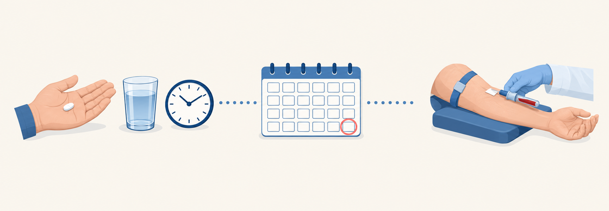

먹기 시작하면 이렇게 확인합니다 한 달 뒤 채혈

| STEP 1 |
STEP 2 |
STEP 3 |
|---|---|---|
| 매일 같은 시간에 드세요. 복용 시간은 일정하게만 지키면 됩니다. | 약효는 한 달쯤이면 거의 다 나타납니다. 이때 공복 채혈로 콜레스테롤이 얼마나 내려갔는지와 간수치를 보고, 근육 증상을 여쭙습니다. | 목표 LDL은 위험도에 따라 다르며 진료 때 알려 드립니다. 계속 먹을지, 약을 바꿀지는 검사 결과와 나의 위험도를 보고 함께 정합니다. |
부작용, 이렇게 대처합니다
| 부작용 | 알아 둘 점 | 이렇게 하세요 |
|---|---|---|
| 근육통 · 쥐 | 근육통은 약 5%에서 호소합니다. 다만 복용 중 생긴 근육통이 모두 약 때문은 아닙니다. | 참고 먹지 마세요. 말씀해 주시면 원인을 확인하고 약을 바꿉니다. |
| 조금 오를 수 있지만 대개 가볍습니다. 심한 간 손상은 드뭅니다. | 한 달 뒤 채혈로 확인합니다. 오르면 약을 조정합니다. | |
| 당화혈색소를 조금 올립니다. 새로 당뇨 진단을 받는 분은 주로 원래 당뇨 경계에 있던 분입니다. | 그 걱정 때문에 필요한 약을 빼면 안 됩니다. 혈관을 지키는 이득이 더 큽니다. |
부작용이 있으면 끊고 바꾸면 됩니다. 다른 스타틴이나 낮은 용량으로 바꾸는 방법이 있습니다. 먹다 끊는다고 몸에 해가 생기지는 않지만, 평생 누적 LDL 노출량을 줄이려면 끊기보다 꾸준히 드시는 것이 좋습니다. 바꾸거나 멈추고 싶으면 먼저 말씀해 주세요.
흔한 오해
MYTH 1
“한번 먹으면 평생이라 무섭다”
먹다 끊는다고 몸에 해가 생기지는 않습니다(원래 수치로 돌아갈 뿐). 혈관의 평생 누적 LDL 노출량을 줄이기 위해 꾸준히 드시는 것입니다.
MYTH 2
“영양제는 안전하고 약은 나쁘다”
스타틴의 장기 안전성은 대규모 연구로 홍삼·즙보다 훨씬 엄격하게 검증됐습니다.
MYTH 3
“살찌고 근육이 빠진다”
근육이 아프거나 힘이 빠지면 확인할 증상입니다. 참지 말고 말씀해 주세요.
MYTH 4
“유튜브에서 나쁘다고 했다”
가짜약과 비교한 연구에서는 가짜약을 먹은 사람도 근육통을 흔히 호소했습니다.
이럴 때는 바로 진료를 받으세요 · RED FLAGS
- 온몸 근육이 심하게 아프거나 힘이 빠질 때
- 소변이 콜라색처럼 진해질 때 — 심한 근육통과 함께이거나 소변량이 줄면 응급실로
- 눈이나 피부가 노래질 때(황달)
- 심한 피로·식욕 저하가 계속될 때
진료 때는 먹는 약과 영양제·건강식품을 모두 알려 주세요. 원인을 찾는 데 도움이 됩니다.